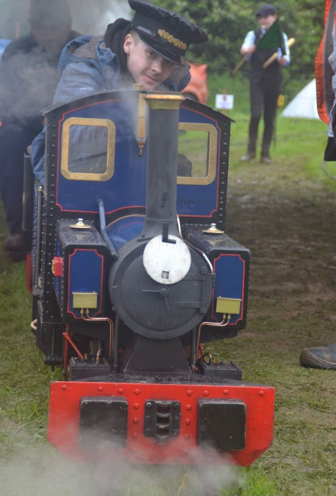
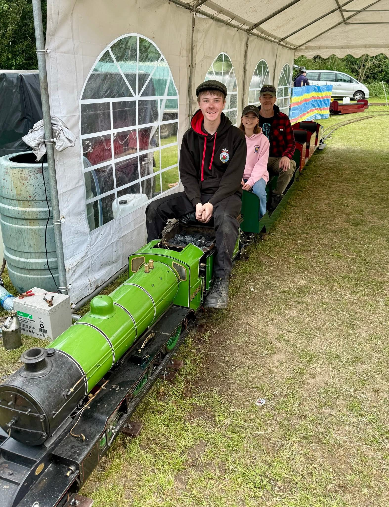
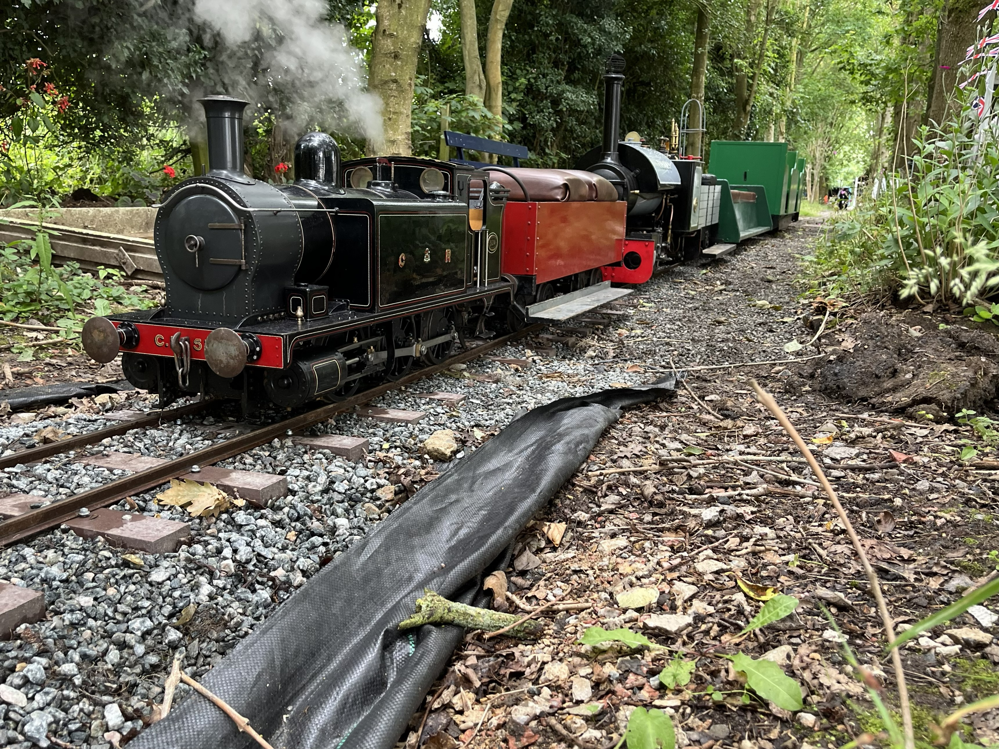
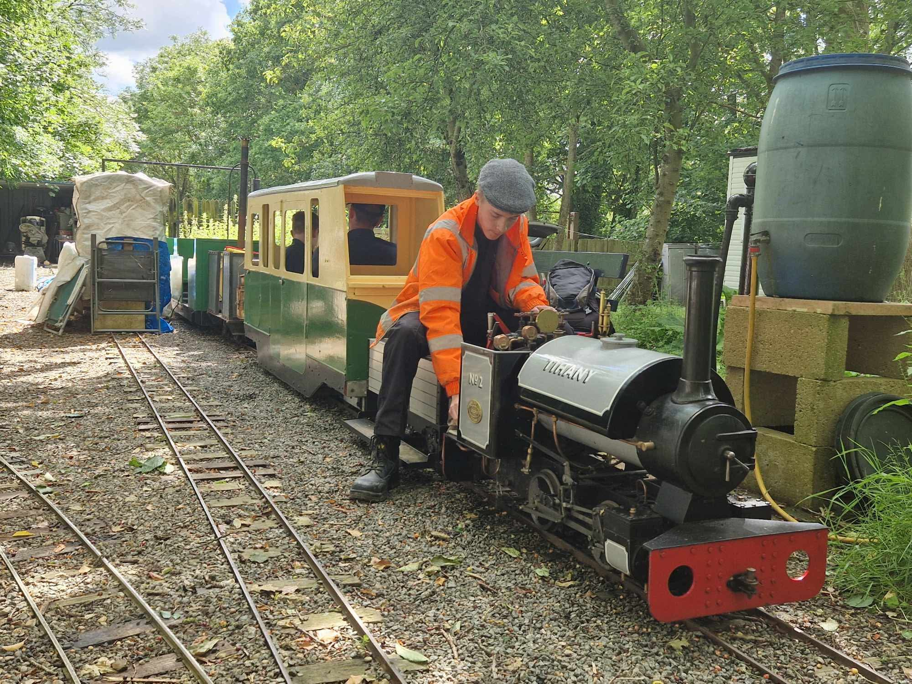
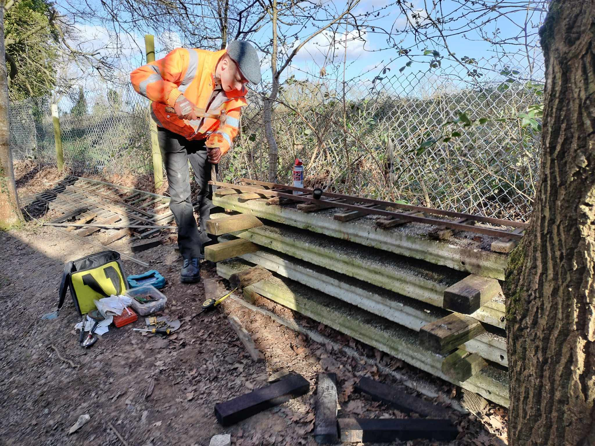
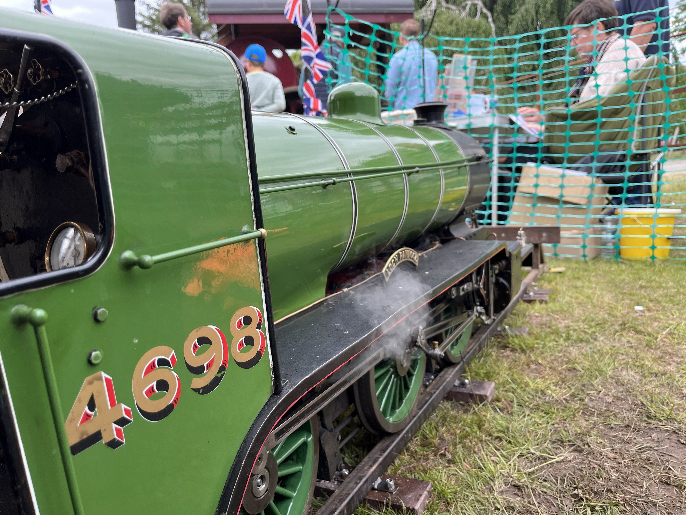
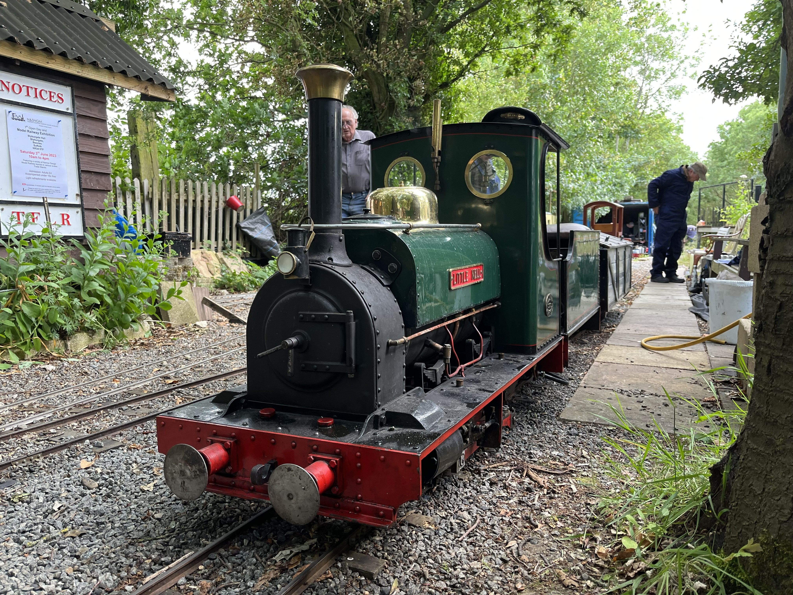

Top Field Light Railway

I have been volunteering at the Top Field Light Railway since March 2023.
Since then I have gained valuable experience in maintenance and operations.
Big projects I have helped in include: rebuilding our steam lcocomotive and relaying all the trackwork.
I am currently the club's roster clerk and help with administrative tasks.
I also help with maintenance and operations, working on the track and rolling stock to keep everything running smoothly.
Volunteering at the railway has been a great experience and I have enjoyed learning new skills and contributing to the club's operations.
Working on the miniature locomotives gives me a unique perspective so i can learn more about the mechanics behind the intricate locomotives.
Gallery
Here are some photos of me volunteering at the railway:







